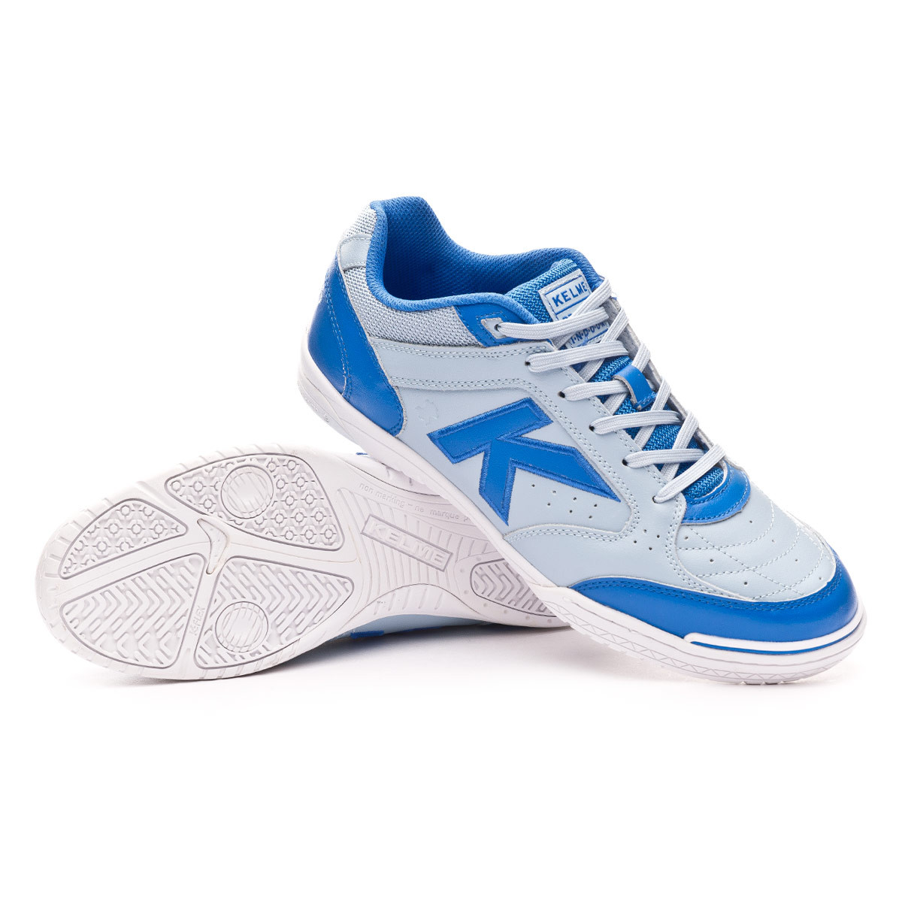

Kelme Precisión Élite |
Información:Fabricado en piel de alta calidad para garantizar la máxima durabilidad sin perder la sensación de control al contactar con el balón. El acolchado del cuello y del interior la hacen muy cómoda. Refuerzo en la puntera para protegerla del desgaste Al ser de perfil medio puede incorporar una capa de EVA, material que ayuda a reducir los impactos y mejorar la amortiguación Destacan los puntos de pivotaje para favorecer los giros. Sistema de líneas de flexión K-Lite que favorece los apoyos y desplazamientos. Sistema Erosion Control que diferencia dos zonas realizadas con caucho de distinta densidad para adaptarse a las necesidades de cada apoyo Por los materiales con los que se fabrica es apta para interior y exterior aunque donde realmente da sus mejores prestaciones es en pistas de interior y poco abrasivas Precio: |
|---|